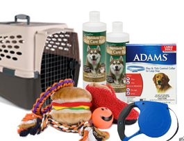

Pre Adoption Tips
 There are some things that the person must get before adopoting such as food, feed bowls, collars, beds, and any other products to make life with a pet easier. We have some a limited amount of pet supplies for sale at the shelter and all proceeds got to placing more animals in loving homes.
Vet Tips
The best way to ensure your pet is in the best health we say do yearly checkups at least. The animals have all been vaccinated and dewormed, but it is still important that the animals are properly cared for.
Vetrinarian Tasks
- Vaccinations
- Microchipping
- Deworming
- Surgery
- Health Advice
Pet Owner Requirements
The adopter has to be 18 years old, and needs to have a good area for whatever pet they are going to adopt. It is a good idea to check with landlords before adopting because of legal rights.